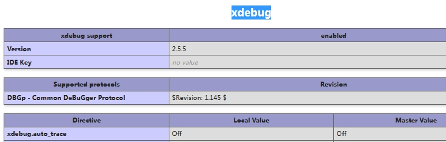
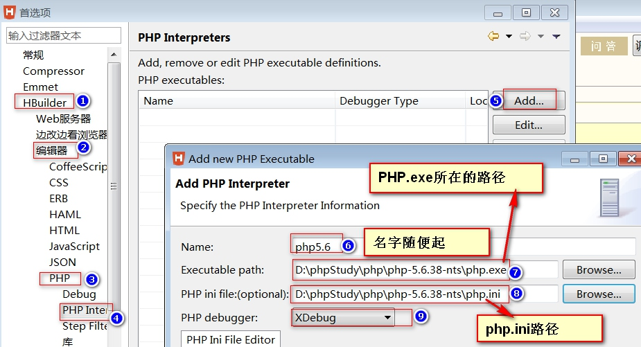

12.开启PHP的XDebug或zend_debugger配合Hbuilder进行断点调试
开启PHP的XDebug
-
检查PHP中是否集成了XDebug
打开所用的的PHP扩展文件所有文件夹(目录),如我的:D:\phpStudy\php\php-5.6.38-nts\ext ,查看里没有没有php_xdebug....dll(动态库文件DLL扩展名)
-
检查PHP配置文件中是否配置了XDebug
打开现在用的PHP所在的目录.里面有个php.ini的文件.
[XDebug] xdebug.profiler_output_dir="D:\phpStudy\tmp\xdebug" xdebug.trace_output_dir="D:\phpStudy\tmp\xdebug" ;一定要注意路径要对 zend_extension="D:\phpStudy\php\php-5.6.38-nts\ext\php_xdebug-2.5.5-5.6-vc11-nts-x86_64.dll" ;开启XDebug的远程调试功能.浏览器与服务端PHP进行的是远程调试 xdebug.remote_enable = On -
重启Apache,用浏览器打开phpinfo.php,里面的内容是
<?php phpinfo(); ?>,看里面的内容有没有XDebug相关的选项.如下图,如果有则服务器端XDebug已成功启用.
Ｈbuilder的PHP代码调试功能
-
打开Hbuilder的选项-->Hbuilder-->编缉器-->PHP-->php interpreters -->add-->配置相关参数如下图 ->最后确认完成.
 -
在代码编辑器中打断点
有有效的PHP代码行前,行号前面双击.会生成或取消一个断点
在代码编辑器中点鼠标右键-->调试方式-->PHP Script调试
提示窗口进行调试视图布局,点是就行了
调试功能说明